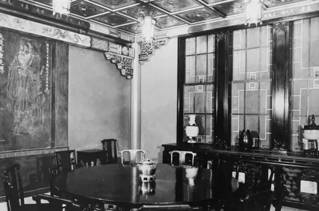

Chinese Nationality Room
访问原网页 ↗Visit original website ↗

S107 · University of Pittsburgh Library System / 摄影者未署名 · 1939
匹兹堡大学图书馆登记的1939年室内照，记录中国教室的圆桌、壁画与室内布置，并注明10月6日启用。该照片用来与设计史料对读，馆方此条未署滕名。The university library’s 1939 photograph documents the circular table and mural in the completed Chinese classroom. The record dates its dedication to October 6 and does not itself name the designer.
馆藏图像与原文Archived images and documents

原始网址Original URL
https://artsandculture.google.com/asset/chinese-nationality-room/YAHqqsJ91i8C5w